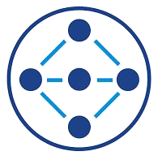

Conception et déploiementJe peux vous aider à concevoir une architecture réseau adaptée à vos besoins en termes de performances, de sécurité et de disponibilité. Cela comprend la configuration des commutateurs virtuels, des pare-feu distribués, des services de routage et de commutation, ainsi que la mise en place de politiques de sécurité granulaires. |
Installation et configurationJe suis en mesure d'installer et de configurer NSX dans votre environnement, en veillant à ce que tous les composants soient correctement déployés et intégrés avec votre infrastructure existante. Cela inclut la configuration des liaisons de données, la création de réseaux logiques et la mise en place de la connectivité avec vos machines virtuelles. |

Micro-segmentationJe peux vous aider à mettre en œuvre la micro-segmentation pour renforcer la sécurité de votre environnement en isolant les charges de travail et en limitant la propagation des menaces à l'intérieur du réseau. |

IntégrationSi vous utilisez déjà des solutions de sécurité tierces, je peux vous aider à intégrer NSX avec celles-ci pour renforcer encore davantage la sécurité de votre environnement. |

Surveillance et dépannageJe peux mettre en place des outils de surveillance pour suivre les performances et la santé de votre réseau NSX, et je suis également disponible pour vous aider à résoudre tout problème qui pourrait survenir. |